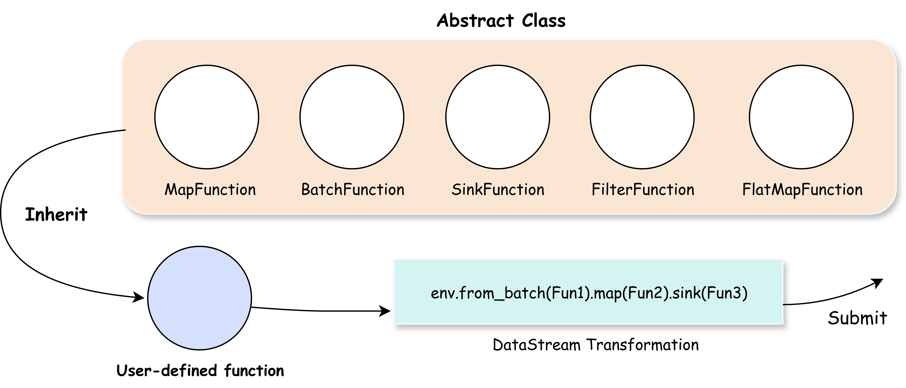

MkDocs Material 高级表达方式模板¶
这个文件展示了在 MkDocs Material 主题中可以使用的各种高级表达方式和组件。
1. 告示框 (Admonitions)¶
提示
这是一个提示框，用于展示重要信息。
信息
这是一个信息框，用于展示一般信息。
小贴士
这是一个小贴士框，用于给出建议。
警告
这是一个警告框，用于提醒注意事项。
危险
这是一个危险框，用于标注风险操作。
成功
这是一个成功框，用于标注成功状态。
失败
这是一个失败框，用于标注失败状态。
错误
这是一个错误框，用于标注 bug 或问题。
示例
这是一个示例框，用于展示代码示例。
引用
这是一个引用框，用于引用他人观点。
可折叠的告示框¶
可折叠的提示 (点击展开)
这个告示框默认是折叠的，点击标题可以展开。
默认展开的可折叠告示框
这个告示框默认是展开的，但可以折叠。
2. 代码块增强¶
基本代码块¶
带标题的代码块¶
带行号的代码块¶
高亮特定行的代码块¶
内联代码块¶
这里有一些内联代码: print("Hello") 和 var x = 10;
3. 标签页 (Tabs)¶
4. 表格¶
基本表格¶
| 特性 | 描述 | 状态 |
|---|---|---|
| 流处理 | 实时数据流处理 | ✅ 完成 |
| 批处理 | 批量数据处理 | ✅ 完成 |
| 分布式 | 分布式计算支持 | 🚧 开发中 |
| 监控 | 实时监控面板 | 📋 计划中 |
对齐表格¶
| 左对齐 | 居中对齐 | 右对齐 |
|---|---|---|
| 内容1 | 内容2 | 内容3 |
| 较长的内容 | 中等内容 | 短内容 |
5. 列表增强¶
任务列表¶
- 完成项目初始化
- 实现基础功能
- 添加测试用例
- 完善文档
- 发布第一个版本
定义列表¶
- 数据流
- 一系列连续的数据元素序列
- 算子
- 对数据流进行转换的操作
- 批处理
- 一次性处理大量数据的计算模式
6. 数学公式 (需要额外配置)¶
内联公式: \(E = mc^2\)
块级公式: $$ \sum_{i=1}^{n} x_i = x_1 + x_2 + \cdots + x_n $$
7. 图标和表情符号¶
常用图标¶
完成
取消
信息
警告
想法
启动
设置
下载
表情符号¶


8. 键盘按键¶
按 Ctrl+C 复制文本
按 Ctrl+V 粘贴文本
按 Enter 确认
按 Shift+Tab 反向缩进
9. 脚注¶
10. 缩写¶
SAGE 是一个很棒的项目，HTML 和 CSS 是网页开发的基础。
11. 链接和引用¶
外部链接¶
内部链接¶
回到首页
查看 DataStream 介绍
引用式链接¶
12. 图片¶
基本图片¶

带标题的图片¶

可点击的图片¶
{kind=link}
13. 引用块¶
这是一个简单的引用块。
这是一个多行的引用块， 可以包含多行内容， 非常适合引用长文本。
重要引用
这个引用块包含了格式化的内容， 比如**粗体**和*斜体*文字。
14. 水平分割线¶
上面的内容
下面的内容
另一种分割线
15. 文本格式¶
粗体文本
斜体文本
粗斜体文本
删除线文本
高亮文本
H2O (下标)
X2 (上标)
16. 进度条 (需要额外扩展)¶
进度条通常需要额外的扩展支持，可以用 HTML 实现：
17. 折叠内容块¶
18. HTML 标签增强¶
居中对齐¶
小字体¶
这是小字体文本
大字体¶
这是大字体文本
标记文本¶
这是标记的重要文本
19. 网格布局 (需要自定义 CSS)¶
功能1
这是第一个功能的描述
功能2
这是第二个功能的描述
20. 按钮样式 (需要自定义 CSS)¶
使用建议¶
- 告示框：最常用的高级组件，适合突出重要信息
- 代码块增强：对于技术文档特别重要
- 标签页：适合展示多种语言或方案的对比
- 表格：结构化数据展示
- 任务列表：项目进度跟踪
- 图标：增加视觉效果，但不要过度使用
21. 代码片段嵌入 (Snippets)¶
你可以使用 pymdownx.snippets 扩展来嵌入外部代码文件：
#!/usr/bin/env python3
# -*- coding: utf-8 -*-
"""
SAGE Framework Hello World 批处理示例
这是一个使用 SAGE Framework 的简单批处理示例，演示了：
1. 批处理数据源 (BatchFunction)
2. 数据转换 (MapFunction)
3. 数据输出 (SinkFunction)
Author: SAGE Team
License: Apache 2.0
"""
import time
from sage.core.api.function.batch_function import BatchFunction
from sage.core.api.function.map_function import MapFunction
from sage.core.api.function.sink_function import SinkFunction
from sage.core.api.local_environment import LocalEnvironment
class HelloBatch(BatchFunction):
"""
批处理数据源函数，生成指定数量的 Hello, World! 消息
该类继承自 BatchFunction，用于生成批处理数据。
当计数器达到最大值时，返回 None 表示批处理完成。
"""
def __init__(self, max_count=10, **kwargs):
"""
初始化批处理数据源
Args:
max_count (int): 最大生成数据条数，默认为 10
**kwargs: 传递给父类的其他参数
"""
super().__init__(**kwargs)
self.counter = 0
self.max_count = max_count
def execute(self):
"""
执行批处理数据生成
Returns:
str: 格式化的 Hello, World! 消息
None: 当达到最大计数时返回 None，表示批处理完成
"""
if self.counter >= self.max_count:
return None # 返回 None 表示批处理完成
self.counter += 1
return f"Hello, World! #{self.counter}"
class UpperCaseMap(MapFunction):
"""
字符串大写转换函数
该类继承自 MapFunction，用于将输入的字符串转换为大写形式。
这是一个简单的数据转换示例。
"""
def execute(self, data):
"""
执行字符串大写转换
Args:
data (str): 输入的字符串数据
Returns:
str: 转换为大写的字符串
"""
if data is None:
return None
return data.upper()
class PrintSink(SinkFunction):
"""
控制台输出函数
该类继承自 SinkFunction，用于将处理后的数据输出到控制台。
这是数据流的最终输出端点。
"""
def execute(self, data):
"""
执行数据输出操作
Args:
data (str): 需要输出的数据
Returns:
str: 返回原始数据（便于链式操作）
"""
if data is not None:
print(f"[OUTPUT] {data}")
return data
def main():
"""
主函数：演示 SAGE Framework 批处理流程
创建一个简单的数据处理流水线：
1. HelloBatch 生成数据
2. UpperCaseMap 转换数据为大写
3. PrintSink 输出结果到控制台
"""
# 创建本地执行环境
env = LocalEnvironment("hello_world_batch_demo")
# 构建数据处理流水线：批处理源 -> 映射转换 -> 输出
print("构建数据处理流水线...")
env.from_batch(HelloBatch).map(UpperCaseMap).sink(PrintSink)
try:
print("开始执行批处理任务...")
env.submit()
# 等待批处理完成
time.sleep(2) # 等待足够时间让批处理完成
except KeyboardInterrupt:
print("\n[INFO] 用户中断程序执行")
except Exception as e:
print(f"[ERROR] 程序执行出错: {e}")
finally:
print("[INFO] Hello World 批处理示例结束")
if __name__ == "__main__":
"""
程序入口点
禁用调试日志并启动主程序
"""
# 禁用全局控制台调试信息，保持输出清洁
# CustomLogger.disable_global_console_debug() # Commented out due to import issue
# 启动主程序
main()
也可以嵌入文件的特定行：
#!/usr/bin/env python3
# -*- coding: utf-8 -*-
"""
SAGE Framework Hello World 批处理示例
这是一个使用 SAGE Framework 的简单批处理示例，演示了：
1. 批处理数据源 (BatchFunction)
2. 数据转换 (MapFunction)
3. 数据输出 (SinkFunction)
22. 内联代码高亮 (Inline Highlight)¶
使用 pymdownx.inlinehilite 可以高亮内联代码：
这是普通内联代码 print("hello")，这是高亮内联代码 print("hello")。
你也可以指定语言：console.log("hello")
23. 属性列表 (Attr List)¶
使用 attr_list 扩展可以给元素添加属性：
图片属性¶
链接属性¶
文本属性¶
这是一段 强调文字 带有自定义属性。
按钮样式链接¶
24. HTML 标签在 Markdown 中 (MD in HTML)¶
使用 md_in_html 扩展可以在 HTML 标签中使用 Markdown：
25. 更多表情符号示例¶
技术相关¶
Python
JavaScript
Git
GitHub
Docker
状态图标¶
完成
失败
警告
信息
疑问
自定义表情¶
Python
JavaScript
数据库
云服务
API
26. 更多文本格式化¶
智能符号¶
使用 pymdownx.caret、pymdownx.mark、pymdownx.tilde：
- 插入文本（上标文本）
删除文本（删除线）- 标记文本（高亮标记）
- H2O（下标）
- E=mc2（上标）
组合使用¶
这是一个包含 新增内容、删除内容 和 重要标记 的句子。
27. 数学公式支持 (需要 MathJax 或 KaTeX)¶
如果配置了数学公式支持，可以使用：
内联公式¶
当 \(a \ne 0\) 时，方程 \(ax^2 + bx + c = 0\) 的解为：
块级公式¶
复杂公式¶
28. 更多键盘按键组合¶
常用快捷键¶
Ctrl+Shift+P 打开命令面板
Alt+Tab 切换应用
Win+R 运行对话框
F12 开发者工具
Ctrl+Shift+I 检查元素
Mac 快捷键¶
Cmd+C 复制
Cmd+V 粘贴
Cmd+Shift+3 截屏
29. 复杂的告示框嵌套¶
30. 更复杂的表格¶
带有代码的表格¶
| 方法 | 语法 | 示例 |
|---|---|---|
| Map | map(function) |
stream.map(lambda x: x * 2) |
| Filter | filter(condition) |
stream.filter(lambda x: x > 0) |
| Reduce | reduce(function) |
stream.reduce(lambda a, b: a + b) |
合并单元格表格 (需要额外插件)¶
| 类别 | 子类别 | 描述 |
|---|---|---|
| 数据源 | 批处理 | 有限数据集 |
| 流处理 | 无限数据流 | |
| 算子 | 转换 | map, filter, reduce |
| 动作 | collect, print, save |
扩展配置说明¶
你当前的配置已经包含了大部分扩展，非常完善！但还可以添加以下配置来支持数学公式：
# 在 mkdocs.yml 中添加
extra_javascript:
- overrides/hide_sidebar.js
- https://polyfill.io/v3/polyfill.min.js?features=es6
- https://cdn.jsdelivr.net/npm/mathjax@3/es5/tex-mml-chtml.js
# 或者添加 KaTeX 支持
extra_css:
- https://cdnjs.cloudflare.com/ajax/libs/KaTeX/0.16.7/katex.min.css
extra_javascript:
- overrides/hide_sidebar.js
- https://cdnjs.cloudflare.com/ajax/libs/KaTeX/0.16.7/katex.min.js
- https://cdnjs.cloudflare.com/ajax/libs/KaTeX/0.16.7/contrib/auto-render.min.js
总结¶
你的配置已经非常完善了！主要遗漏的功能包括：
- 代码片段嵌入 - 可以直接嵌入外部文件
- 内联代码高亮 - 更好的内联代码展示
- 属性列表 - 给元素添加 CSS 类和属性
- HTML 中的 Markdown - 在 HTML 标签中使用 Markdown
- 更丰富的表情符号 - FontAwesome 和 Octicons 图标
- 数学公式支持 - 需要额外的 JavaScript 库